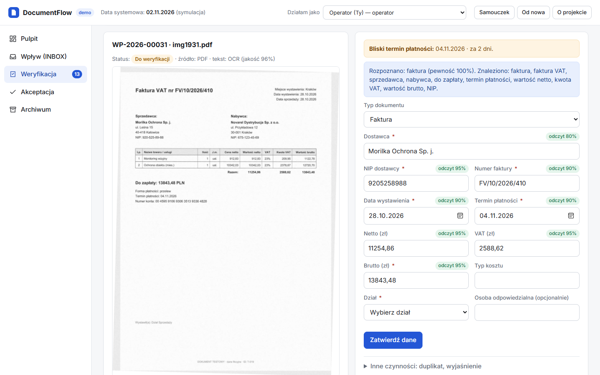

DocumentFlow
Elektroniczny obieg dokumentów w fikcyjnej firmie: od skanu faktury, przez sprawdzenie danych i akceptację, do archiwum z pełną historią.

Działa w przeglądarce, także na telefonie. Krótki samouczek pokaże, od czego zacząć.
Jak to działa
Wpływ
Dokument trafia do skrzynki i dostaje numer wpływu. System sprawdza, czy ten sam plik nie wpłynął już wcześniej.
Odczyt
OCR odczytuje tekst skanu. System rozpoznaje typ dokumentu (faktura, umowa, pismo) i proponuje dane: dostawcę, NIP, kwoty, terminy.
Weryfikacja
Człowiek porównuje skan z danymi i poprawia je. System pilnuje błędów: zły NIP, niezgodne kwoty, możliwy duplikat. Dokument naprawdę błędny oznacza się i przekazuje do decyzji akceptującego.
Akceptacja
Fakturę akceptują kolejne osoby, zależnie od kwoty: kierownik działu, dyrektor, finanse. Kto sprawdzał dane, ten nie akceptuje.
Archiwum
Plik dostaje nazwę według wzoru i trafia do folderu Rok / Miesiąc / Typ / Dział. Jest tylko do odczytu i ma termin brakowania.
Kontrola
Wyszukiwarka po danych i treści, pełna historia (kto, kiedy, co zmienił) oraz alerty o zbliżających się terminach płatności.
Wszystkie dane są fikcyjne. W wersji w przeglądarce odczyt tekstu (OCR) został wykonany wcześniej przez pełny program na komputerze, a reszta obiegu działa na żywo.